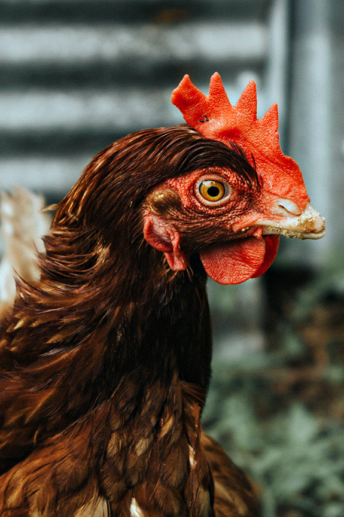
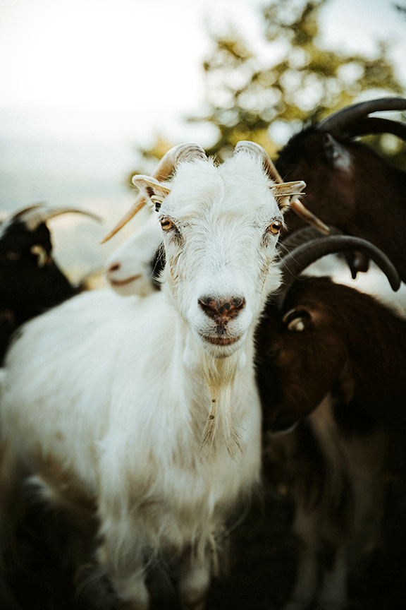
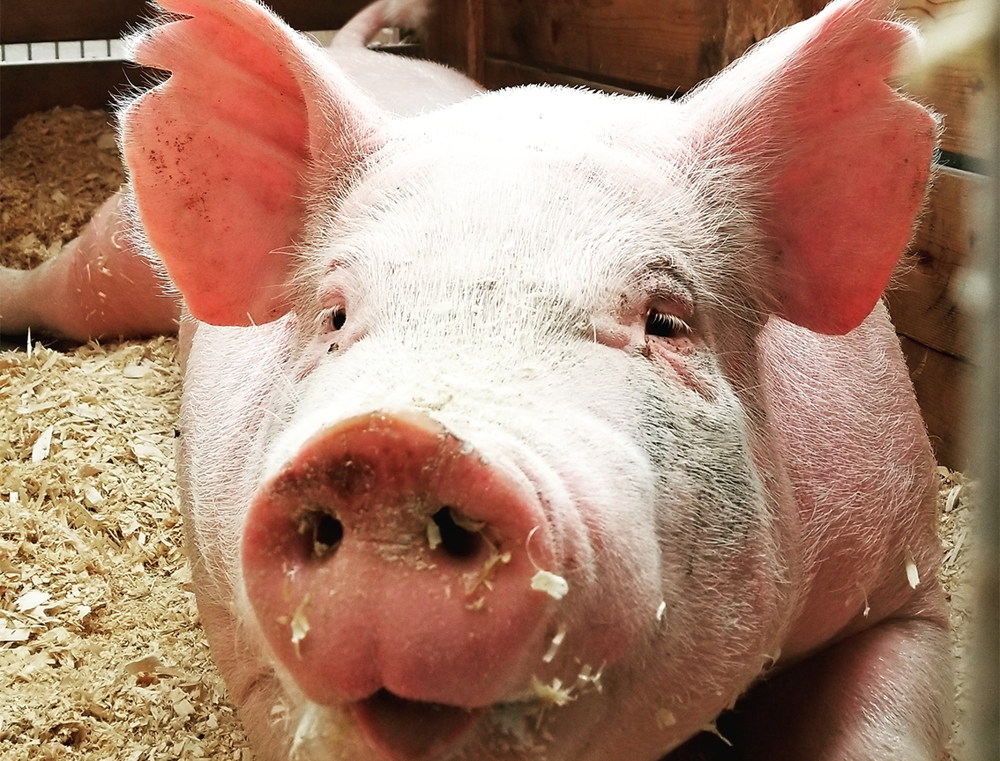
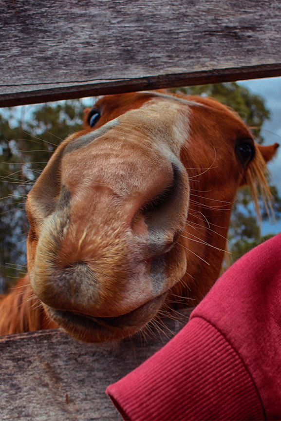
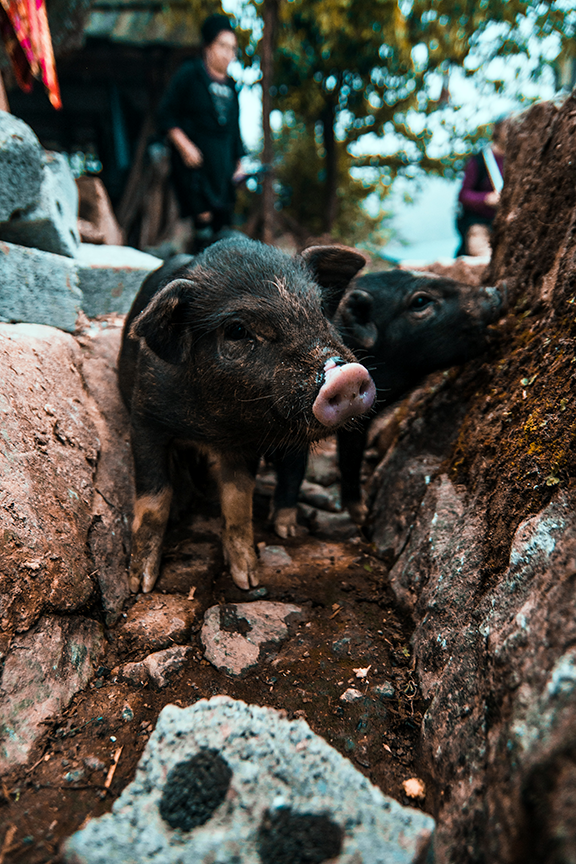

ROOTERVILLE
Encouraging Compassion
Inspiring Change
Rooterville Animal Sanctuary, located in Melrose, FL, provides a safe and compassionate refuge to rescued farm animals.





LEARN MORE ABOUT ROOTERVILLE


OUR STORY
A LOVING HOME FOR RESCUED FARM ANIMALS--MAINLY PIGS!
Many of our animals come to us after suffering the horrors of life on factory farms. Making the switch to a plant-based diet not only removes your support from the brutally cruel animal ag industry, but also offers a variety of health benefits like healing heart disease and type 2 diabetes too! Find your best health ever, it's easier than you think! Every dollar you spend is a vote for something. Vote for things that matter and that do good. For your health, for the environment and for the animals, the best choice is vegan!
Visitors are welcome to come and spend time with the animals and explore the sanctuary on your own, on Friday, Saturday, and Sunday between the hours of 10AM til 3PM. Tours are avaible Friday, Saturday, and Sunday at 11am and 1pm. Visitors are welcome to join a tour if one is happening while you're here! Tours are free. Suggested donation to visit is only $10 per person, $30 for a family of 4